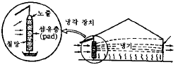

원예기능사 (2004-07-18 기출문제)
1과목: 임의 구분
1. 키가 작고, 소륜다화성으로 화단용으로 적합한 매리골드의 계통은?
- 아프리카계
- 유럽계
- 아메리카계
- 프렌치계
(정답률: 69%)

2. 다음 중 선인장의 접목번식 방법으로 가장 좋은 방법은?
- 깎기접(절접)
- 쪼개접(할접)
- 맞접(합접)
- 안장접(안접)
(정답률: 69%)
3. 연작 장해의 원인이 아닌 것은?
- 뿌리에서 생육을 저해하는 물질의 분비
- 토양 염류의 과잉 축적
- 진딧물 등의 해충 만연
- 특정 미량요소의 결핍
(정답률: 60%)
4. 버미큘라이트 및 펄라이트 등의 특징에 속하지 않는 것은?
- 인공적인 고온처리로 만들어 진다.
- 완전히 멸균되어 균이 없는 토양이다.
- 가볍고 물빠짐 및 보수력이 좋다.
- 비료의 모든 성분이 고루 포함되어 있다.
(정답률: 90%)
5. 스톡 겹피기 모종의 특징을 맞게 설명한 것은?
- 발육이 늦은 것 일수록 겹피기가 많다.
- 떡잎이 긴타원형에 가깝고 모양이 큰 것에 겹피기가 많다.
- 잎의 색깔이 짙은 것일수록 겹피기가 많다.
- 본잎이 7 - 8잎일 때 잎가장자리에 톱니가 적은 것은 겹피기율이 높다.
(정답률: 60%)
6. 카네이션의 생리 장해인 악할(언청이)의 원인이라 볼 수 없는 것은?
- 밤과 낮의 온도 교차가 적을 때
- 저온기에 관수량이 많은 경우
- 질소, 인산의 과용시
- 과건 및 과습시
(정답률: 95%)
7. 응애를 방제하기 위한 약제로서 갖추어야 할 구비 조건이 아닌 것은?
- 응애류에만 선택적인 효과가 있을 것
- 잔효력이 있을 것
- 유충에만 효과가 클 것
- 적용 범위가 넓을 것
(정답률: 48%)
8. 다음 장미의 계통 중 4계성이며 관목으로 절화재배에 적당한 것은?
- 하이브리드 티
- 플로리 반다
- 넝쿨장미
- 왜성장미
(정답률: 53%)
9. 가공용 토마토의 수확 적기는?
- 녹숙기
- 최색기
- 완숙기
- 과숙기
(정답률: 96%)
10. 하우스내에서 적산온도가 가장 높은 채소의 종류는 어느것인가?
- 토마토, 호박
- 수박, 참외
- 딸기, 오이
- 완두, 가지
(정답률: 80%)
11. 당근을 솎아줄 때 솎아주지 않고 남겨두어 가꾸어야 할 것은?
- 생육이 왕성한 것
- 잎 수가 많은 것
- 초세가 약한 것
- 근수부(根首部)가 굵지 않은 것
(정답률: 55%)
12. 파종기를 조절하므로써 병의 피해가 적어지는 것은?
- 토마토 풋마름병
- 배추 무사마귀병
- 고구마 검은 무늬병
- 배추 무름병
(정답률: 63%)
13. 채소를 저장 전의 처리방법으로 실시하지 않는 것은?
- 추숙
- 예건
- 큐어링
- 맹아억제
(정답률: 77%)
14. 수박 접목 재배에서 호접(맞접법)의 요령을 기술한 것 중 옳지 않은 것은?
- 접수와 대목을 동시에 파종한다.
- 접붙이는 시기는 대목의 떡잎이 벌어지면 실시한다.
- 줄기 굵기의 1/2 정도를 자른다.
- 줄기의 동공을 막아준다.
(정답률: 64%)
15. 종자의 숙도에 차이가 심하여 발아가 일반적으로 고르지 못한 것은?
- 양파
- 참외
- 당근
- 가지
(정답률: 69%)
16. 준 인과류에 속하는 것은?
- 감
- 포도
- 배
- 밤
(정답률: 84%)
17. 복숭아의 조생종 종자를 대목용으로 사용하지 않는 가장 중요한 이유는?
- 병해충에 약하기 때문에
- 종자의 발아율이 낮기 때문에
- 접목 불친화 때문에
- 왜성화되기 때문에
(정답률: 66%)
18. 다음 중 당년생의 새가지에 결실하는 과수는?
- 복숭아
- 포도
- 배
- 양앵두
(정답률: 72%)
19. 포도 유리나방의 가해 장소는 포도나무의 어느 곳인가?
- 꽃
- 과실
- 줄기
- 뿌리
(정답률: 62%)
20. 우리나라에서 감귤나무의 대목으로 가장 많이 이용되고 있는 것은?
- 탱자나무
- 감귤의 공대
- 유자나무
- 하귤나무
(정답률: 95%)
2과목: 임의 구분
21. 연동식 하우스가 단동식 하우스에 비해 유리한 점은 무엇인가?
- 광선의 투광량이 많다.
- 설치 및 분해가 편리하다.
- 환기작업이 간편하다.
- 설치 자재비가 절약된다.
(정답률: 58%)
22. 하우스내의 토양에서 염류집적으로 작물이 농도 장해가 발생할 때 장해 대책으로 가장 부적합한 것은?
- 여름에 피복물을 제거하여 준다.
- 땅을 깊이 갈아 엎어준다.
- 관수를 충분히 하여 용탈시켜 준다.
- 흡비력이 약한 작물을 윤작한다.
(정답률: 81%)
23. 시설의 환기 효과에 대한 설명이 틀린 것은?
- 습도조절을 해준다.
- 이산화탄소 억제의 양을 줄인다.
- 유해가스를 추방한다.
- 온도조절을 해준다.
(정답률: 63%)
24. 무토양 재배의 특징과 관계가 없는 것은?
- 같은 장소에서 같은 작물을 반복 재배할 수 있다.
- 각종 채소의 청정재배가 가능하다.
- 작업의 생력화가 가능하다.
- 배양액의 완충능력이 강하다.
(정답률: 48%)
25. 양액재배시 배양액의 관리 방법이 틀린 것은?
- 양액의 pH는 5.5 - 6.5가 알맞다.
- pH를 높이는 데는 수산화칼륨(KOH)을 사용한다.
- 전기전도도(EC)는 2.0 ± 0.5가 알맞다..
- 생육에 적당한 양액의 온도는 10 - 15℃가 알맞다.
(정답률: 62%)
26. 시설의 보온비에 대한 설명으로 맞는 것은?
- 시설의 외표 면적에 대한 바닥면적의 비율
- 전체 난방비 중에서 보온이 차지하는 비율
- 시설의 지붕 면적에 대한 바닥 면적의 비율
- 전체 시설 표면적에 대한 보온 피복면의 비율
(정답률: 48%)
27. 펠레트 하우스(pellet house)를 바르게 설명한 것은?
- 채광 위주의 시설이다.
- 환기 위주의 시설이다.
- 보온 위주의 시설이다.
- 관수 위주의 시설이다.
(정답률: 70%)
28. 다음 병 중에서 세균성인 것은?
- 무 검은무늬병
- 오이 풋마름병
- 배추 속썩음병
- 배추 순모자이크병
(정답률: 64%)
29. 시설 내의 산광 피복재로써 그늘이 생기지 않는 것은?
- 투명 유리
- 염화비닐 필름(PVC)
- 폴리에틸렌 필름(PE)
- 유리섬유 강화 폴리에스테르파형판(FRP)
(정답률: 71%)
30. 다음 중 시설 재배에서 문제가 되는 유해 가스는 어느것인가?
- 질소
- 이산화탄소
- 아질산
- 플루오르화수소
(정답률: 73%)
31. 적정온도가 상대적으로 높은 고온성 작물에 해당되지않는 것은?
- 가지
- 배추
- 피망
- 오이
(정답률: 88%)
32. 비닐하우스에서 가장 많이 사용되는 난방방법은?
- 난로난방
- 전열난방
- 온풍난방
- 온수난방
(정답률: 84%)
33. 다음 중 시설원예의 특성이라고 할 수 있는 것은?
- 집약적 경영이다.
- 자본의 소요가 적다.
- 농약의 사용이 증가한다.
- 생산물 가격이 저렴하다.
(정답률: 75%)
34. CO2 시비에 가장 알맞는 시간은 언제인가?
- 해뜨기 직전
- 해뜬 후 1시간
- 한 낮
- 해지기 직전
(정답률: 71%)
35. 시설 내의 토양 염류의 농도가 높아 양분의 흡수가 억제 되어 결핍증상이 나타나기 쉬운 것은 어느 것인가?
- 질소
- 칼륨
- 칼슘
- 인산
(정답률: 60%)
36. 시설재배에 적합한 수박 품종의 구비 조건이 아닌 것은?
- 저온 신장성 및 저온 결과성이 강할 것
- 숙기가 느릴 것
- 과실의 크기가 적당하고 수송성이 좋을 것
- 과피가 두꺼울 것
(정답률: 70%)
37. 플러그묘 생산시 우리나라에서는 어느 방식을 주로 사용하는가?
- 이동식 붐(boom)
- 스프링클러
- 수동식 관수
- 로봇트 붐(boom)
(정답률: 45%)
38. 다음 작물 중 플러그묘의 육묘기간이 가장 긴 것은?
- 오이
- 토마토
- 호박
- 배추
(정답률: 63%)
39. 온실 경보장치의 경보 동기가 아닌 것은?
- 컴퓨터가 ON 되었을 때
- 온실내의 온도가 극한으로 상승 또는 하강할 때
- 센서가 단선되어 불안정 상태로 출력을 할 경우
- 센서가 항상 같은 출력을 내거나 포화출력을 낼 때
(정답률: 75%)
40. 육묘용 상토의 구비조건이 아닌 것은?
- 배수성이 좋아야 한다.
- 염기치환용량이 작아야 한다.
- 물리성이 좋아야 한다.
- 보수성이 좋아야 한다.
(정답률: 96%)
3과목: 임의 구분
41. 다음 중 이산화탄소의 시용량으로 가장 적당한 농도는?
- 150 ∼ 300ppm
- 300 ∼ 900ppm
- 1,000 ∼ 1,500ppm
- 1,500 ∼ 3,000ppm
(정답률: 87%)
42. 토양 수분의 표시법으로 가장 알맞은 것은?
- %
- ppm
- pF
- lx
(정답률: 61%)
43. 양열온상육묘시 양열재료의 수분량이 가장 알맞은 것은?
- 양열재료가 포화상태까지 물을 뿌린다.
- 양열재를 쥐어서 물이 나오면 않된다.
- 양열재료가 약간 젖도록 물을 조금 뿌린다.
- 밟은 후 양열재료를 쥐어서 손가락 사이로 물이 약간 나올 정도로 뿌린다.
(정답률: 79%)
44. 시설재배를 할 때 환기를 해 주는 목적과 거리가 먼것은?
- 온도를 조절해 준다.
- 습도를 조절해 준다.
- 유해가스를 줄여준다.
- 작물의 호흡 작용을 촉진시켜준다.
(정답률: 80%)
45. 시설 내의 염류 농도 장해를 막는 방법 중 효과가 가장적은 것은?
- 객토를 한다.
- 깊이갈이를 한다.
- 유기물을 많이 준다.
- 작물을 연중 재배한다.
(정답률: 95%)
46. 다음 중 시설 내 공중습도와 가장 관계가 깊은 것은?
- 토양 염류 농도
- CO2농도
- 병충해 발생
- 광선의 질
(정답률: 60%)
47. 다음 중 산광피복자재로서 그늘이 생기지 않는 것은?
- FRP
- 유리
- PVC
- PE
(정답률: 73%)
48. 시설내의 광환경을 개선하기 위한 방법으로 가장 알맞는 것은?
- 시설을 남북 방향으로 설치한다.
- 골격률을 높인다.
- 반사광을 이용한다.
- 착색필름을 사용한다.
(정답률: 70%)
49. 시설 원예를 성공적으로 이끌기 위한 조건으로서 가장 중요한 것은?
- 지온
- 지형
- 광질
- 기온
(정답률: 78%)
50. 시설의 구비조건이 아닌 것은?
- 최악의 기상조건에서도 견딜 수 있는 구조물이어야 한다.
- 관리가 편리하고 재배면적을 최대한으로 확보할 수있는 구조 조건이어야 한다.
- 시설비가 적게드는 구조이어야 한다.
- 작물생육에 적당한 온도 조건만을 만들어 주는데 효율적이어야 한다.
(정답률: 70%)
51. 양액재배 방법 중 분무경재배의 설명으로 가장 알맞는 것은?
- 뿌리를 베드내의 공중에 매달아 양액을 분무로 젖어 있게 하는 재배방식
- 배양액을 뿌리에 분무함과 동시에 뿌리의 일부를 양액에 담아 재배하는 방식
- 뿌리가 양액에 담겨진 상태로 재배하는 방식
- 고형 배지에 양액을 공급하면서 재배하는 방식
(정답률: 80%)
52. 녹식물춘화형 식물의 설명으로 가장 알맞는 것은?
- 식물체가 어느 정도 성장한 뒤에 저온에 감응할 수있는 식물이다.
- 종자단계부터 저온에 감응할 수 있는 식물이다.
- 발아하기 시작하면서부터 저온에 감응할 수 있는 식물이다.
- 배추, 무, 순무 등은 녹식물춘화형 식물이다.
(정답률: 53%)
53. 다음 중 토양의 수분을 측정하는 기구는 어느 것인가?
- 텐시오메타
- 전기전도도계
- pH메타
- 습도계
(정답률: 80%)
54. 환기의 효과로 볼 수 없는 것은?
- 온ㆍ습도 조절
- 유해가스 추방
- 이산화탄소 공급
- 보온 효과 증대
(정답률: 83%)
55. 점토광물 중 규산층과 알루미나층이 1:1의 비율로 결합된 것은?
- 카올리나이트군
- 일라이트군
- 몬모릴로나이트군
- 버미큘라이트
(정답률: 83%)
56. 농도가 60%인 유제(비중1)100ml를 0.⑤%로 희석하려 할때 필요한 물의 양은?
- 600ℓ
- 425.9ℓ
- 230.5ℓ
- 119.9ℓ
(정답률: 71%)
57. 어떤 식물의 건조전 무게가 120ｇ이고 건조후 무게가 30ｇ이라면, 이 식물의 생체 무게당 수분함량(%)은?
- 65%
- 70%
- 75%
- 80%
(정답률: 59%)
58. 시설 내 탄산가스의 제어방법이라 볼 수 없는 것은?
- 시설내 환기
- 관수
- 유기물 사용
- CO2 발생기
(정답률: 69%)
59. 증산작용이 활발하게 이루어지면서 직사광선에 노출되지 않은 상태의 엽온은?
- 기온보다 높다
- 기온과 같다.
- 기온보다 낮다.
- 생육최적온도을 유지한다.
(정답률: 58%)
60. 그림과 같이 설치하여 실내 온도를 냉각하는 냉방방법은 무엇인가?

- 팬과 패드 방법
- 팬과 미스트 방법
- 세무 분사
- 옥상 유수
(정답률: 73%)